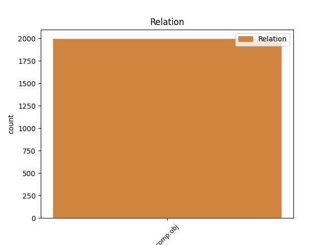
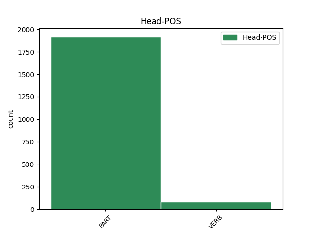
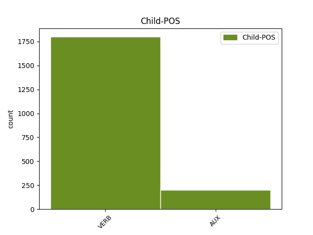

Distribution of features within this leaf



Agreement Rules sorted by frequency.
- When the dependent token is the direct object complements(comp:obj) of the head token, and the dependent token is VERB.
1 Frecvența _ _ _ _ 0 _ _ _
2 f _ _ _ _ 0 _ _ _
3 ( _ _ _ _ 0 _ _ _
4 din _ _ _ _ 0 _ _ _
5 coloana _ _ _ _ 0 _ _ _
6 a _ _ _ _ 0 _ _ _
7 doua _ _ _ _ 0 _ _ _
8 ) _ _ _ _ 0 _ _ _
9 arată arăta VERB Vmip3 Mood=Ind|Person=3|Tense=Pres|VerbForm=Fin 0 _ _ _
10 de _ _ _ _ 0 _ _ _
11 câte _ _ _ _ 0 _ _ _
12 ori _ _ _ _ 0 _ _ _
13 apare apărea VERB Vmip3s Mood=Ind|Number=Sing|Person=3|Tense=Pres|VerbForm=Fin 9 comp:obj _ _
14 valoarea _ _ _ _ 0 _ _ _
15 variabilei _ _ _ _ 0 _ _ _
16 x _ _ _ _ 0 _ _ _
17 în _ _ _ _ 0 _ _ _
18 setul _ _ _ _ 0 _ _ _
19 de _ _ _ _ 0 _ _ _
20 date _ _ _ _ 0 _ _ _
21 . _ _ _ _ 0 _ _ _
1 Un _ _ _ _ 0 _ _ _
2 eșantion _ _ _ _ 0 _ _ _
3 probabilist _ _ _ _ 0 _ _ _
4 aleator _ _ _ _ 0 _ _ _
5 pentru _ _ _ _ 0 _ _ _
6 care _ _ _ _ 0 _ _ _
7 elementele _ _ _ _ 0 _ _ _
8 sunt _ _ _ _ 0 _ _ _
9 selectate _ _ _ _ 0 _ _ _
10 dintr- _ _ _ _ 0 _ _ _
11 un _ _ _ _ 0 _ _ _
12 cadru _ _ _ _ 0 _ _ _
13 în _ _ _ _ 0 _ _ _
14 care _ _ _ _ 0 _ _ _
15 elementele _ _ _ _ 0 _ _ _
16 au _ _ _ _ 0 _ _ _
17 aceeași _ _ _ _ 0 _ _ _
18 probabilitate _ _ _ _ 0 _ _ _
19 să să PART Qs Mood=Sub 0 _ _ _
20 fie fi AUX Vasp3 Mood=Sub|Person=3|Tense=Pres|VerbForm=Fin 19 comp:obj _ _
21 alese _ _ _ _ 0 _ _ _
22 se _ _ _ _ 0 _ _ _
23 numește _ _ _ _ 0 _ _ _
24 eșantion _ _ _ _ 0 _ _ _
25 aleator _ _ _ _ 0 _ _ _
26 simplu _ _ _ _ 0 _ _ _
27 . _ _ _ _ 0 _ _ _
Disagree Examples:
1 Aparatul _ _ _ _ 0 _ _ _
2 care _ _ _ _ 0 _ _ _
3 se _ _ _ _ 0 _ _ _
4 numea _ _ _ _ 0 _ _ _
5 tele-ecran _ _ _ _ 0 _ _ _
6 , _ _ _ _ 0 _ _ _
7 putea _ _ _ _ 0 _ _ _
8 fi _ _ _ _ 0 _ _ _
9 dat _ _ _ _ 0 _ _ _
10 mai _ _ _ _ 0 _ _ _
11 încet _ _ _ _ 0 _ _ _
12 , _ _ _ _ 0 _ _ _
13 dar _ _ _ _ 0 _ _ _
14 nu _ _ _ _ 0 _ _ _
15 aveai _ _ _ _ 0 _ _ _
16 cum _ _ _ _ 0 _ _ _
17 să să PART Qs Mood=Sub 0 _ _ _
18 -l _ _ _ _ 0 _ _ _
19 închizi închide VERB Vmip2s Mood=Ind|Number=Sing|Person=2|Tense=Pres|VerbForm=Fin 17 comp:obj _ _
20 de _ _ _ _ 0 _ _ _
21 tot _ _ _ _ 0 _ _ _
22 . _ _ _ _ 0 _ _ _
1 Oricum _ _ _ _ 0 _ _ _
2 , _ _ _ _ 0 _ _ _
3 avea _ _ _ _ 0 _ _ _
4 înfățișarea _ _ _ _ 0 _ _ _
5 unui _ _ _ _ 0 _ _ _
6 om _ _ _ _ 0 _ _ _
7 cu _ _ _ _ 0 _ _ _
8 care _ _ _ _ 0 _ _ _
9 puteai _ _ _ _ 0 _ _ _
10 sta _ _ _ _ 0 _ _ _
11 de _ _ _ _ 0 _ _ _
12 vorbă _ _ _ _ 0 _ _ _
13 , _ _ _ _ 0 _ _ _
14 dacă _ _ _ _ 0 _ _ _
15 ai _ _ _ _ 0 _ _ _
16 fi _ _ _ _ 0 _ _ _
17 putut _ _ _ _ 0 _ _ _
18 cumva _ _ _ _ 0 _ _ _
19 păcăli _ _ _ _ 0 _ _ _
20 tele-ecranul _ _ _ _ 0 _ _ _
21 și _ _ _ _ 0 _ _ _
22 să să PART Qs Mood=Sub 0 _ _ _
23 -l _ _ _ _ 0 _ _ _
24 prinzi prinde VERB Vmip2s Mood=Ind|Number=Sing|Person=2|Tense=Pres|VerbForm=Fin 22 comp:obj _ _
25 singur _ _ _ _ 0 _ _ _
26 . _ _ _ _ 0 _ _ _
1 Ceea _ _ _ _ 0 _ _ _
2 ce _ _ _ _ 0 _ _ _
3 voisem _ _ _ _ 0 _ _ _
4 , _ _ _ _ 0 _ _ _
5 de _ _ _ _ 0 _ _ _
6 fapt _ _ _ _ 0 _ _ _
7 , _ _ _ _ 0 _ _ _
8 să să PART Qs Mood=Sub 0 _ _ _
9 -ți _ _ _ _ 0 _ _ _
10 spun spune VERB Vmip1s Mood=Ind|Number=Sing|Person=1|Tense=Pres|VerbForm=Fin 8 comp:obj _ SpaceAfter=No
11 , _ _ _ _ 0 _ _ _
12 era _ _ _ _ 0 _ _ _
13 că _ _ _ _ 0 _ _ _
14 în _ _ _ _ 0 _ _ _
15 articolul _ _ _ _ 0 _ _ _
16 dumitale _ _ _ _ 0 _ _ _
17 am _ _ _ _ 0 _ _ _
18 observat _ _ _ _ 0 _ _ _
19 că _ _ _ _ 0 _ _ _
20 ai _ _ _ _ 0 _ _ _
21 folosit _ _ _ _ 0 _ _ _
22 două _ _ _ _ 0 _ _ _
23 cuvinte _ _ _ _ 0 _ _ _
24 care _ _ _ _ 0 _ _ _
25 s- _ _ _ _ 0 _ _ _
26 au _ _ _ _ 0 _ _ _
27 perimat _ _ _ _ 0 _ _ _
28 . _ _ _ _ 0 _ _ _
1 Te- _ _ _ _ 0 _ _ _
2 ar _ _ _ _ 0 _ _ _
3 interesa _ _ _ _ 0 _ _ _
4 cumva _ _ _ _ 0 _ _ _
5 să să PART Qs Mood=Sub 0 _ _ _
6 te _ _ _ _ 0 _ _ _
7 uiți uita VERB Vmip2s Mood=Ind|Number=Sing|Person=2|Tense=Pres|VerbForm=Fin 5 comp:obj _ _
8 prin _ _ _ _ 0 _ _ _
9 el _ _ _ _ 0 _ _ _
10 ? _ _ _ _ 0 _ _ _
1 Deci _ _ _ _ 0 _ _ _
2 , _ _ _ _ 0 _ _ _
3 cum _ _ _ _ 0 _ _ _
4 zici _ _ _ _ 0 _ _ _
5 să să PART Qs Mood=Sub 0 _ _ _
6 fac face VERB Vmip3p Mood=Ind|Number=Plur|Person=3|Tense=Pres|VerbForm=Fin 5 comp:obj _ SpaceAfter=No
7 , _ _ _ _ 0 _ _ _
8 să _ _ _ _ 0 _ _ _
9 trimit _ _ _ _ 0 _ _ _
10 pe _ _ _ _ 0 _ _ _
11 cineva _ _ _ _ 0 _ _ _
12 la _ _ _ _ 0 _ _ _
13 dumneata _ _ _ _ 0 _ _ _
14 să _ _ _ _ 0 _ _ _
15 ți- _ _ _ _ 0 _ _ _
16 l _ _ _ _ 0 _ _ _
17 aducă _ _ _ _ 0 _ _ _
18 ? _ _ _ _ 0 _ _ _